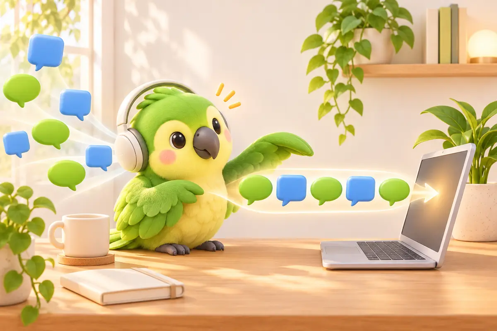
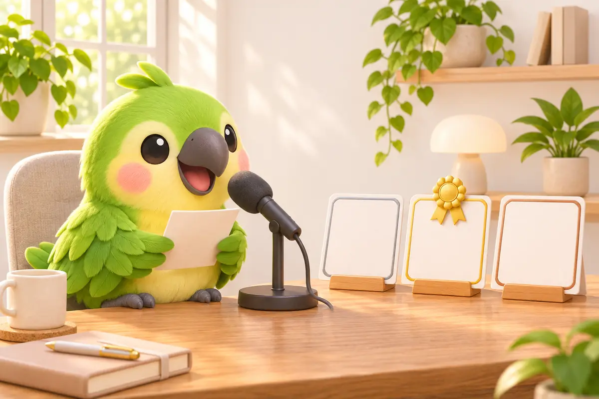

iPhoneのカメラでスキャンParroting iPhone版 · 買い切り800円
iPhoneのカメラでスキャンParroting iPhone版 · 買い切り800円私はSona Orbitで、Parrotingを一人で開発している個人開発者です。Parrotingは本サイトの自社製品です。無料のMac用音声入力アプリで、この記事に登場するモデルをアプリ内でダウンロードできます。比較表の数値は、transcribe.cppが公開している評価結果に基づきます。中国語の誤字率にはFLEURS中国語テストセット、速度の測定にはM4 MaxのGPUが使われています。数値はParrotingの音声モデル解説と同じものです。その他の数値には公式の出典を示しています。Mac、声、話す内容によって結果は変わるため、相対的な目安として見てください。機能の説明はParroting 0.4.15に基づきます。
1. まず結論：話し方に合わせて選ぶ
- 速くてファイルが小さい、普段使いのモデルが欲しい：SenseVoice Small（253 MB）。Parrotingで「おすすめ」と表示されるモデルです。少し古いMacでも軽快に動きます。
- 中国語の精度を上げたい：Qwen3-ASR 1.7B（1.5 GB）は、この一覧で中国語の誤字率が最も低いモデルです。速度とのバランスを取るならQwen3-ASR 0.6B（850 MB）を選べます。
- 台湾のアクセントや中英混在の発話が多い：Breeze-ASR-25（1.2 GB）を試してください。MediaTek Researchが台湾の中国語と中英混在に合わせて調整しています。ただし、この一覧では最も遅いモデルです。
- ほぼ英語だけを話す：NVIDIAのParakeetシリーズも選択肢です。英語では速く正確ですが、中国語には対応していません。
- 自分の録音で専用モデルを学習させたい：現在公開されているオープンソースのparroting-asr-trainingツールキットは、SenseVoice Small向けです。手順は前の記事で説明しています。
2. 比較表：サイズ、速度、中国語の誤字率
| モデル | 開発者 | ダウンロードサイズ | 中国語の誤字率 （低いほど正確） | 速度 （高いほど速い） | 言語 |
|---|---|---|---|---|---|
| SenseVoice Small | Alibaba FunAudioLLM | 253 MB | 10.1% | 267× | 中国語、広東語、英語、日本語、韓国語 |
| Qwen3-ASR 0.6B | Alibaba Qwen | 850 MB | 7.6% | 69× | 30言語 |
| Qwen3-ASR 1.7B | Alibaba Qwen | 1.5 GB | 7.1% | 41× | 30言語 |
| Fun-ASR Nano | Alibaba FunAudioLLM | 891 MB | 8.6% | 78× | 中国語、英語、日本語 |
| Fun-ASR Nano Multilingual | Alibaba FunAudioLLM | 891 MB | 7.3% | 70× | 31言語 |
| Breeze-ASR-25 | MediaTek Research | 1.2 GB | 8.1% | 22× | 中国語、英語（台湾の中国語） |
| Whisper Large v3 Turbo | OpenAI | 886 MB | 8.5% | 44× | 約100言語 |
表を見るときは、次の2点に注意してください。
- FLEURSはニュース原稿の読み上げを、簡体字の正解文と比較しています。ここではSenseVoiceの誤字率が最も高いものの、日常の短い文で差を同じように感じるとは限りません。Breeze-ASR-25が得意な台湾のアクセントや中英混在も、このテストでは十分に測れません。
- 速度には大きな差があります。SenseVoice SmallはBreeze-ASR-25より10倍以上速いモデルです。キーを離してから文字が出るまでの待ち時間に関わります。
3. 音声入力で大切なのはベンチマークの点数だけではない
ネット上の評価は、標準的なデータセットをサーバーのGPUで測るものが中心です。一方、Macでホットキーを押して話すときに気になるのは、次の3点です。
- キーを離してから、どれくらい速く文字が出るか。0.2秒待つのと2秒待つのでは、使い心地が大きく違います。
- 台湾の中国語に英語の専門用語を混ぜたとき、同音の誤字や意図しない簡体字が出ないか。
- ファイルの大きさとメモリ使用量はどれくらいか。8 GBのMacで複数のアプリを開く場合には重要です。
数年前まで、Macのローカル音声文字起こしツールの多くはOpenAIのWhisperを使っていました。日常の中国語入力に使うと、精度を上げるには大きなモデルが必要で、話し終えてから待つことになります。出力に簡体字が混ざることもあります。無音や雑音を「謝謝觀看」（「ご視聴ありがとうございました」の意）のような、話していない言葉として認識する「ハルシネーション」も起こり得ます。中国語向けのSenseVoice、Qwen3-ASR、Breeze-ASR-25が使われるようになった理由の一つです。
4. SenseVoice Small：速く、普段使い向き
SenseVoice Smallは、Alibaba FunAudioLLMがオープンソースで公開したモデルです。特徴は「非自己回帰」方式です。文字を一つずつ予測するのではなく、発話全体に対応する文字を一度に計算します。公式の説明では、Whisper-Smallの5倍以上、Whisper-Largeの15倍速いとされています。
- 使い心地：ホットキーを押して一文を話し、キーを離すと、ほぼすぐにカーソル位置へ文字が貼り付けられます。
- 言語：中国語、広東語、英語、日本語、韓国語の5言語に対応し、話した言語を自動判定します。
- 弱点：大きなモデルより中国語の誤字がやや多く、出力は簡体字が中心です。知らない人名やGemini、Claudeのような新しい英語の名前では、同音の別の字を選ぶことがあります。
Parrotingは、この弱点を補うためにローカル処理を加えています。繁体字（台湾の用字）または簡体字への自動変換、句読点や中国語と英語の間のスペースの調整を行います。さらに、発音を照合する個人用の辞書で、繰り返し聞き間違える語を固定できます。
5. Qwen3-ASR：中国語の誤字率が低いモデル
Qwen3-ASRはAlibabaのQwenチームによる音声認識モデルです。公式の説明によると、Qwen3-Omniの音声理解能力を基にしています。30言語に加え、広東語の香港・広東のアクセント、呉語、閩南語など、中国語の22の方言やアクセントに対応します。
- 精度：比較表では、1.7Bの中国語の誤字率が最も低い7.1%です。0.6Bは7.6%です。
- 0.6Bと1.7Bのどちらを選ぶか：いつでも呼び出せる入力ツールとしては、0.6B（850 MB）が速度と精度のバランスを取りやすいモデルです。1.7B（1.5 GB）はより正確ですが、遅く、メモリも多く使います。
- 向いている人：アクセントが強い人、話すのが速い人、複数の言語を混ぜて話す人です。
同じ開発元のFun-ASR Nano（891 MB）も選択肢です。中国語の誤字率はQwen3-ASR 0.6Bに近く、Multilingual版は31言語に対応します。
6. Breeze-ASR-25：台湾の中国語と中英混在
普段から「這個 PR 的 logic 有點問題，你幫我 check 一下 API 的 response」（このPRのロジックに問題がありそうなので、APIのレスポンスを確認してほしい、という意味）のように話す場合、汎用モデルは中国語と英語の切り替わりで間違えることがあります。Breeze-ASR-25は、MediaTek ResearchがWhisper Large-v2を基に、台湾の中国語と中英混在に合わせて調整したオープンソースモデルです。
公式モデルカードに掲載された、元のWhisper Large-v2との単語誤り率の比較です。
| テストセット | 内容 | Whisper Large-v2 | Breeze-ASR-25 | 変化 |
|---|---|---|---|---|
| CommonVoice16-zh-TW | 台湾の中国語 | 9.84 | 7.97 | −19% |
| ASCEND-MIX | 中英混在 | 21.01 | 16.38 | −22% |
| CSZS-zh-en | 中英混在 | 29.49 | 13.01 | −56% |
中英混在での改善が最も目立ちます。一方、台湾の中国語による長い録音を使ったFormosaシリーズのテストでは、改善幅は0～9%で、わずかに悪化した項目もあります。
代償：基になっているのはWhisperの大きなモデルです。この一覧では最も遅く、速度は22×です。SenseVoice Smallは267×です。2、3秒話してすぐキーを離す使い方では、待ち時間を感じやすくなります。会議メモや技術的な議論など、中英混在の内容を一度に長く話すなら試す価値があります。

7. WhisperとmacOS標準の音声入力
Whisper：OpenAIの多言語モデルで、この一覧では対応言語が最も多く、約100言語です。Large v3 Turbo（886 MB）の中国語の誤字率は8.5%ですが、SenseVoiceよりかなり遅いモデルです。速さを優先してSmallやそれ以下のモデルにすると、中国語の誤字が明らかに増えます。出力に簡体字が混ざったり、無音時にハルシネーションが起きたりすることもあります。
macOS標準の音声入力：インストール不要で、たまに一言、二言話すには便利です（「Macでメッセージや書類を音声入力する」（Apple サポート））。ただし、AppleのmacOSの機能が利用できる言語の一覧では、中国語（台湾）はデバイス上で音声を認識する言語に含まれません。音声はAppleのサーバーで処理されます。モデルを切り替えることも、個人用の辞書を使うこともできません。
8. 自分の声で2分間試す
ベンチマークに使われるのは、ほかの人の声と原稿です。話す速さ、マイクとの距離、よく使う言葉は人によって違います。誤字率が最も低いモデルが、あなたの声を最も正確に認識するとは限りません。Parrotingには、これを試す機能があります。
- 音読を数回録音する：設定 → パーソナライズ学習 →「音読の録音」を開きます。1回につき10文で、約2分です。各文を読み終えると聞き間違えた文字が示され、終了時に誤字率が表示されます。5文ごとに1文が評価用に残されます。モデルを比較するなら、評価用の文が増えるように数回録音してください。
- 比較したいモデルをダウンロードする：設定 → 話す → 音声モデルと言語 →「モデルを管理」を開きます。SenseVoice Small、Qwen3-ASR 0.6B、Breeze-ASR-25などを選べます。
- 同じ評価用の文で比べる：「モデルを管理」ウインドウの上部にある「音読の録音でテスト」を押すと、自分の声に対する各モデルの誤字率を確認できます。
自分のマイクとアクセントなら、253 MBのSenseVoice Smallで十分正確か、大きなモデルに替えると誤字がどれだけ減るかを確認できます。

9. モデルを選んだ後に残る誤字の直し方
どのモデルを選んでも、汎用モデルは新しい同僚の名前や社内プロジェクトのコードネームを知りません。次の組み合わせがおすすめです。
- 速いモデルを基本にする：普段はSenseVoice SmallかQwen3-ASR 0.6Bを使います。キーを押して話し、離すと貼り付けられます。
- 繰り返す誤字は個人用の辞書で直す：貼り付け後に人名や専門用語を修正すると、Parrotingが発音を照合し、確認リストに追加します。「辞書に追加」を押せば、次の文から反映されます。AIを使わなくても機能します。
- 話し言葉の余分な語は、必要に応じてAIで整える：「呃、那個、不對改成三點半」（「ええと、あの、違う、3時半にして」の意）のような言い直しが多いなら、Apple Intelligenceまたは無料のGeminiのAPIキーを使って、AIによる整理を有効にできます。
さらに誤字を減らしたい場合は、前の記事辞書から自分専用の音声モデルまで、誤字を減らす3段階の方法をご覧ください。
10. よくある質問
Parrotingでモデルをダウンロードしたり切り替えたりするには料金がかかりますか？
かかりません。Parrotingは無料です。掲載したモデルはすべてアプリ内でダウンロードし、いつでも切り替えられます。文字数や利用時間の制限もありません。各モデルは開発者がオープンソースライセンスで公開しています。使用前にライセンスを確認できます。
モデルをたくさんダウンロードすると、メモリを使い続けますか？
いいえ。ダウンロードしたモデルが使うのはディスク容量だけです。メモリに読み込まれるのは使用中のモデルだけで、しばらく使わなければ解放されます。その後の最初の音声入力では、約0.1～0.4秒余分にかかります。不要なモデルは「モデルを管理」で削除できます。
メモリが8 GBのMacには、どのモデルがおすすめですか？
まずは標準のSenseVoice Small（253 MB）を使ってください。メモリ使用量が少なく、応答も最も速いモデルです。精度を上げたいならQwen3-ASR 0.6B（850 MB）を試せます。Breeze-ASR-25とQwen3-ASR 1.7Bはサイズが大きく、複数のアプリを同時に開くとメモリを多く使います。
中国語の誤字率が最も低いモデルはどれですか？
transcribe.cppのFLEURS中国語評価では、Qwen3-ASR 1.7B（7.1%）です。ただし、これはニュース原稿を読み上げた結果です。台湾のアクセントや中国語と英語が混ざる話し方では結果が変わるため、音読の録音で自分の声を試すことをおすすめします。
macOS標準の音声入力ではだめですか？
たまに短い中国語を一言、二言入力するなら、標準の音声入力が手軽です。ただし、中国語（台湾）の音声はAppleのサーバーで処理されます。モデルの切り替えも、個人用の辞書の利用もできません。